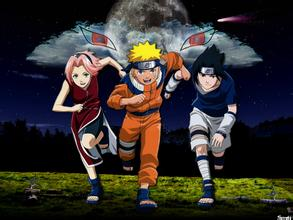
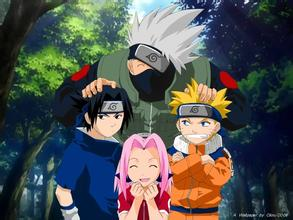

| 火影忍者介绍 | ||||
 《火影忍者》是日本漫画家岸本齐史的代表作，作品于1999年开始在《周刊少年JUMP》上连载，于2014年11月10日发售的JUMP第50号完结；后日谈性质的外传漫画《火影忍者外传：第七代火影与绯色花月》则于同杂志2015年第22、23合并号开始短期连载。 《火影忍者》是日本漫画家岸本齐史的代表作，作品于1999年开始在《周刊少年JUMP》上连载，于2014年11月10日发售的JUMP第50号完结；后日谈性质的外传漫画《火影忍者外传：第七代火影与绯色花月》则于同杂志2015年第22、23合并号开始短期连载。故事成功地将原本隐藏在黑暗中，用世界上最强大的毅力和最艰辛的努力去做最密不可宣和隐讳残酷的事情的忍者，描绘成了太阳下最值得骄傲最光明无限的的职业。在岸本齐史笔下的忍者世界中，每一位年轻的忍者都在开拓着属于自己的忍道。 木叶忍者村突然遭到九尾妖狐的袭击，第四代火影牺牲生命将妖狐封印到当时还是婴儿的鸣人身上。村人将鸣人当做妖狐的化身，对他冷眼相待，鸣人为了得到大家的认同而不断在村里搞恶作剧，以引起人们的注意。鸣人的目标是成为村子里最伟大的忍者“火影”，让所有人认同他的存在。 在忍者学校是万年吊车尾的鸣人，终于得到伊鲁卡老师的认同而顺利毕业，并和同期毕业的佐助、小樱分配到同一小组。指导上忍卡卡西为了培育鸣人他们的团队合作精神而在生存训练中设下各种考验，最终判定他们合格，也使得鸣人他们学习到了团队合作的重要性。 卡卡西小组收到任务，保护造桥专家达兹纳回到波之国。但在任务途中，他们遭到雾忍者村的叛忍桃地再不斩的攻击，这也成为了他们的第一次实战。众人在战斗中各自都有所成长，也了解到了忍者世界的残酷性。 鸣人他们完成任务回到村子，卡卡西推荐他们参加即将举办的中忍考试。考试会场中强手云集，而在考试过程中，鸣人他们遭到原属木叶忍者村、已经叛离村子的大蛇丸的攻击，佐助也被大蛇丸在身上留下了咒印。之后，鸣人和佐助顺利通过预选赛，并为即将到来的正式考试作准备。鸣人得到木叶三忍之一的自来也传授忍术，而佐助则是受到卡卡西的专门指导。但与此同时，大蛇丸正在暗地里酝酿着阴谋，那就是联合砂忍者村一同袭击木叶。 |
||||
|  |  |  |
||
| 鸣人在正式考试的第一场击败了人称天才的日向宁次，向大家证明了自己的实力。但在考试中途，音忍和砂忍们开始向木叶忍者村发动攻击，考试也被迫中止。大蛇丸向第三代火影发起挑战，在一场激战过后，第三代火影战死，而大蛇丸也付出了失去两只手臂的代价，被迫撤退。鸣人则与砂忍者村派来的“兵器”我爱罗交手，并打败了我爱罗。 木叶忍者村由于大蛇丸的阴谋而受到极大的损伤，就在此时，已经叛离木叶的宇智波鼬突然现身。鼬是佐助的哥哥，曾经将一族的人们全部杀光而离开村子，这次他与雾忍者村的干柿鬼鲛一同来到木叶，似乎是以鸣人体内的九尾作为目标，并且是受到名为“晓”的组织的命令。佐助得知鼬回到村子，向鼬发起挑战，但却遭到惨败。此后，自来也为了寻找新任火影的候补人选纲手，同时也为了帮助鸣人修行，而和鸣人一起外出寻找纲手的下落。 大蛇丸找到纲手，希望她能治疗自己的双手，并提出可以让她再次见到她最重视的两人的条件。纲手为此犹豫不决，这时鸣人和自来也找到了她。纲手对继任火影一事心灰意冷，但她看到鸣人为了成为火影的梦想而刻苦修行的样子，也逐渐改变了想法。之后纲手拒绝了大蛇丸的请求，昔日的三忍展开激烈的战斗，鸣人也终于练成了自来也所传授的螺旋丸，打败了大蛇丸的随从兜。最后大蛇丸被逼退，纲手跟随自来也和鸣人回到木叶，成为第五代火影。 佐助因为鸣人实力的飞速成长而感到焦虑，这时大蛇丸的使者音忍四人众前来说服他离开木叶前往音忍者村。佐助为了得到更强大的力量以向鼬复仇，而离开了村子去找大蛇丸。鸣人、鹿丸等人结成五人小队前去追赶佐助，途中分别与音忍四人众以及随后赶到的君麻吕展开战斗，期间得到了砂忍者村援军的助力，好不容易才将敌人一一击败。鸣人追上了佐助，但佐助不打算回到村子，两人使出浑身解数展开激战，最后鸣人还是功亏一篑，败在佐助手下而没能挽留佐助。之后鸣人回到村子，打算和自来也一同外出修行，以使自己变得更强。 |
||||